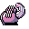

#067
Machoke
Fighting
Its muscular body is so powerful, it must wear a power save belt to be able to regulate its motions
Base stats Total 345
HP80
Attack100
Defense70
Speed45
Special50
Details
- Species
- Superpower
- Height
- 4'11"
- Weight
- 155.0 lb
- Catch rate
- 90
- Base exp
- 146
- Growth
- Medium Slow
Level-up moves
LevelMoveType
StartKarate ChopFighting
StartLow KickFighting
StartLeerNormal
Lv 9TackleNormal
Lv 18Focus EnergyNormal
Lv 21BideBird
Lv 24Mach PunchFighting
Lv 28Seismic TossFighting
Lv 32Rolling KickFighting
Lv 36Cross ChopFighting
Lv 41Double-EdgeNormal
TM / HM
TM01 Mega PunchTM05 Mega KickTM06 ToxicTM08 Body SlamTM09 Take DownTM10 Double-EdgeTM17 SubmissionTM18 CounterTM19 Seismic TossTM26 EarthquakeTM27 FissureTM28 DigTM31 MimicTM32 Double TeamTM34 BideTM35 MetronomeTM37 FlamethrowerTM38 Fire BlastTM44 RestTM48 Rock SlideTM50 SubstituteHM04 Strength